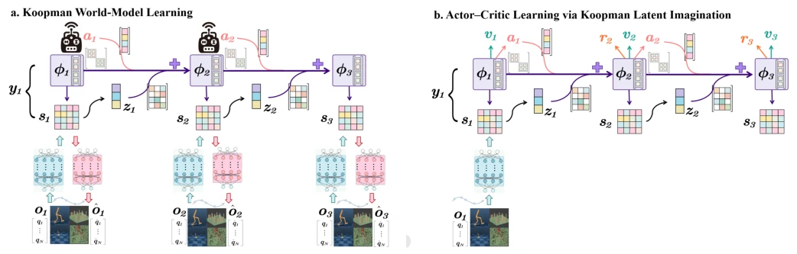
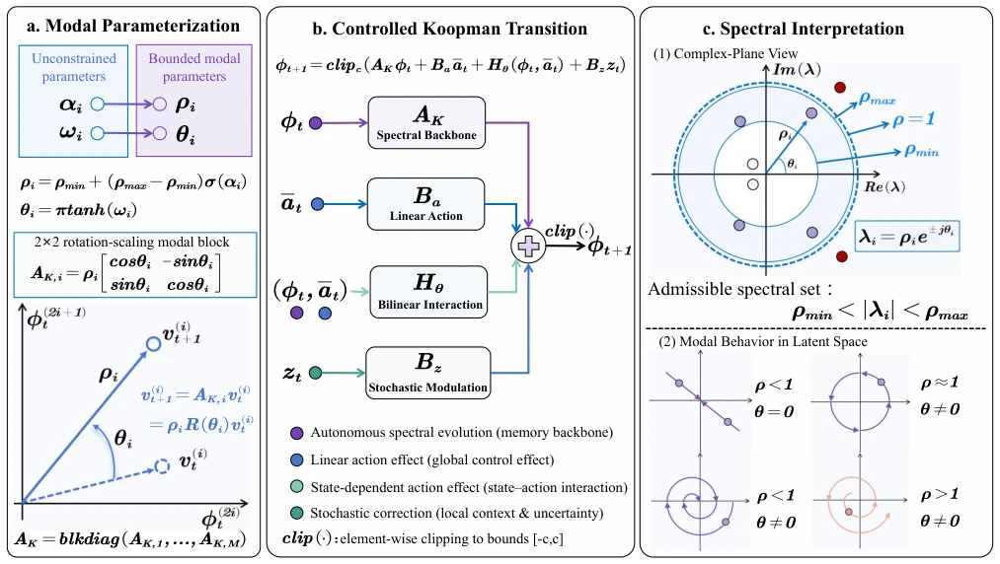
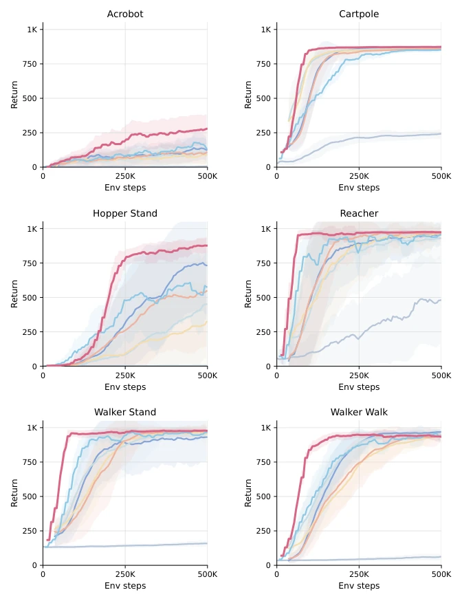
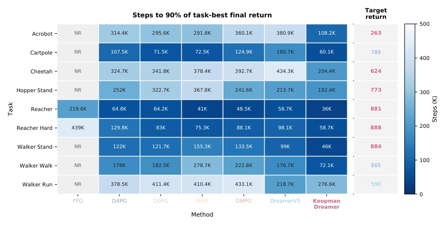
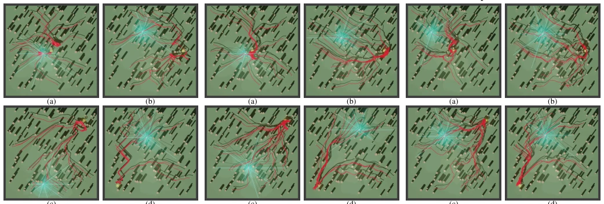
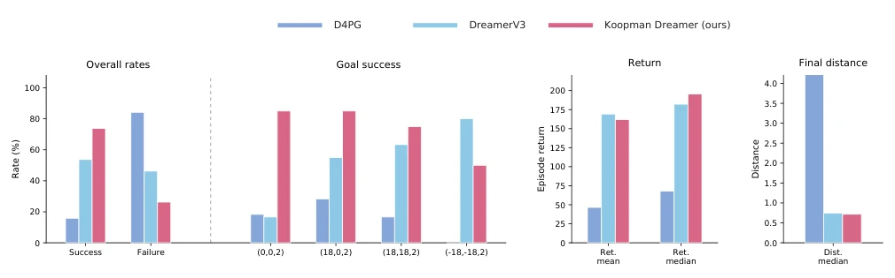
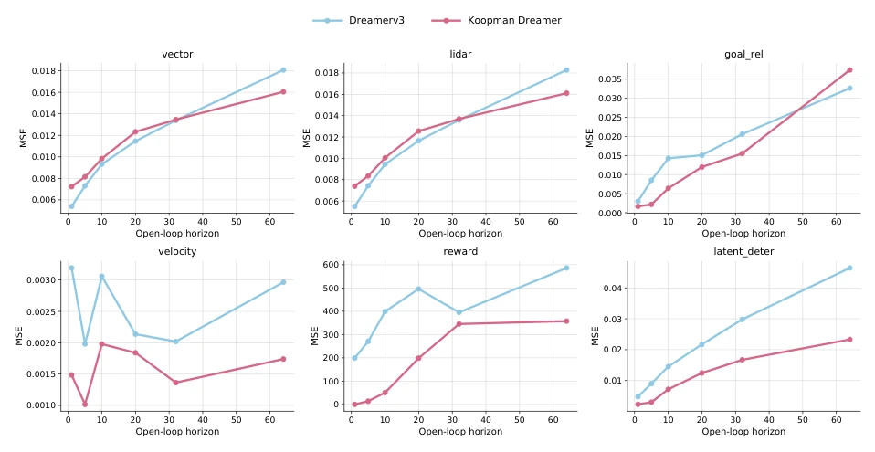
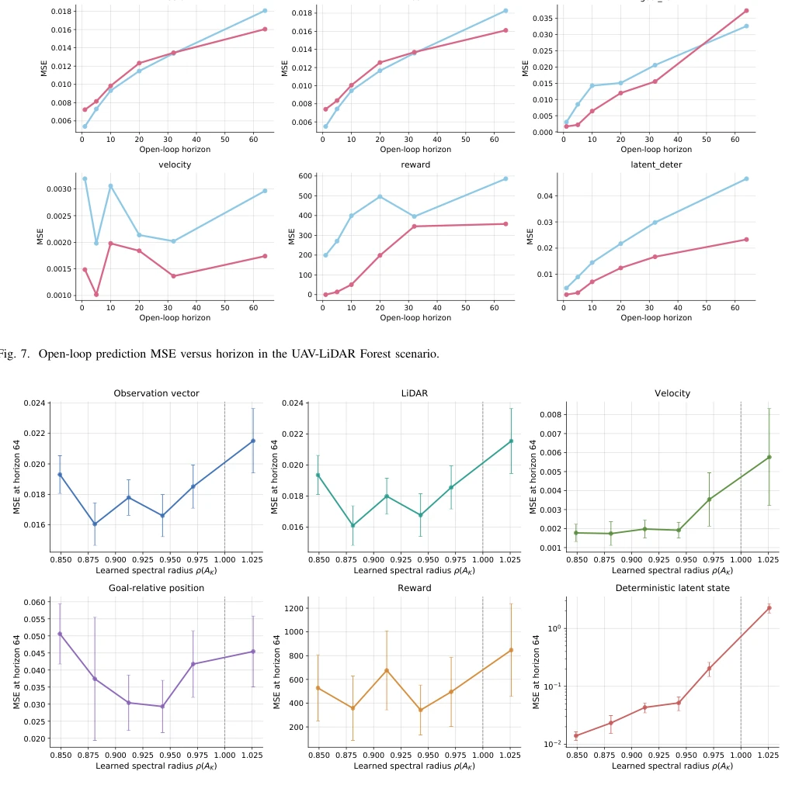
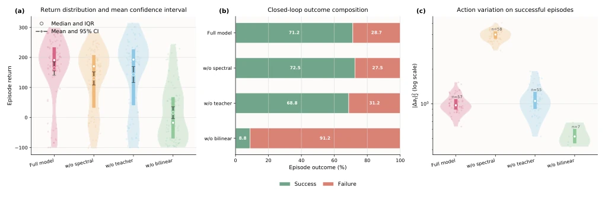
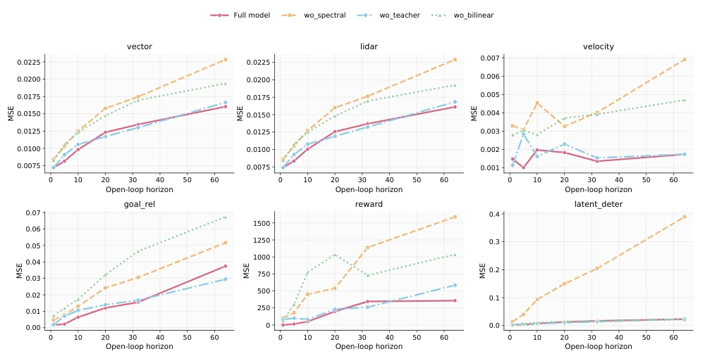

This paper adds "mathematical constraints" to Dreamer, attempting to rein the world model using Koopman operator theory. Although it sounds sophisticated, essentially it replaces the "engine" with a more structured one on the DreamerV3 framework. The advantage lies in the stability of long-horizon prediction, particularly on smooth dynamics tasks; the drawback is that such spectral constraints may become a burden for non-periodic or chaotic tasks, and the theoretical analysis is limited to local error bounds, with actual deployment still relying on hyperparameter tuning. However, for tasks requiring long-horizon imagination, this explicit stability is indeed more reassuring than black-box networks, as engineers can adjust the spectral radius to balance error decay and information retention.
Existing Dreamer-like models [9] rely on universal neural networks to implicitly learn dynamics, resulting in uncontrollable error accumulation during long-horizon rollout, where convergence depends on data rather than structure. Continuous control tasks often involve damping and near-periodic modes, yet existing methods cannot explicitly adjust modal persistence. This leads to drift in imagined trajectories, impacting policy updates. This paper aims to explicitly control contraction and oscillation via spectral constraints to address the instability of long-horizon prediction. While universal neural networks possess strong expressive power, they lack direct intervention on dynamic properties, rendering long-horizon behavior difficult to diagnose. Koopman theory offers a perspective on linearizing nonlinear systems within an observable function space, making it suitable for constructing latent space dynamics with explicit stability guarantees.

Fig. 1. Learning workflows of Koopman Dreamer. (a) Posterior-conditioned world-model learning from observed sequences, where observations provide stochastic-state corrections and prediction targets. (b) Actor–critic learning on prior imagined trajectories initialized from an observation-conditioned state, without access to future observations. Both workflows share the controlled Koopman latent transition detailed in Fig. 2.
The overall architecture follows DreamerV3, but the deterministic state transition is replaced by a spectral-constrained Koopman backbone. The flow is: Observation encoding -> Deterministic Koopman state propagation -> Stochastic state correction -> Prediction head. Innovations: 1) 2D rotation-scaling block parameterizes AK, where modal radius rho_i is bounded, directly controlling decay/oscillation; 2) Linear + bilinear action terms adapt to controlled nonlinearity; 3) Introduction of posterior conditional EMA teacher and multi-step rollout loss to align training and imagination distributions. Specifically, the deterministic state phi_t evolves autonomously via AK, combined with linear action term Ba a_t and bilinear interaction term H_theta to handle state-dependent control, while stochastic state s_t provides local correction. Training objectives include one-step Koopman consistency, multi-step teacher rollout, and open-loop observation prediction, ensuring the latent space remains decodable under open-loop imagination. Theoretical analysis provides multi-step error bounds, separating spectral amplification and residual effects.

Fig. 2. Controlled Koopman latent transition and its spectral structure. (a) Bounded modal radii and phases define the two-dimensional rotation–scaling blocks of the autonomous Koopman backbone. (b) The deterministic update combines autonomous spectral evolution, linear and state-dependent action effects, and stochastic-state modulation before smooth element-wise clipping. (c) The eigenvalue geometry and representative latent trajectories illustrate contraction, persistence, rotation, and amplification under different modal radii and phases.
Evaluated on DeepMind Control Suite (9 proprioceptive tasks) and UAV-LiDAR forest navigation. Baselines include DreamerV3, etc. Metrics: Final score, sample efficiency, open-loop prediction MSE. Koopman Dreamer outperforms DreamerV3 on 8/9 DMC tasks, with UAV success rate improving from 53.8% to 73.8%. Ablation studies show the spectral radius requires trade-off, as excessive contraction leads to information loss. Additionally, open-loop prediction error is significantly reduced, demonstrating improved latent state quality.

Fig. 3. Learning curves on nine DMC proprioceptive tasks.

Fig. 4. Environment steps required to reach 90% of the task-best final return. NR denotes that the target was not reached within 500K steps.

Fig. 5. Top-down trajectories for four Forest targets: (a) (0, 0, 2), (b) (18, 0, 2), (c) (18, 18, 2), and (d) (−18, −18, 2). Each panel shows the 15 highest-return trajectories in one representative shared scene.

Fig. 6. Closed-loop UAV-LiDAR results over four targets and three shared Forest scenes.

Fig. 7. Open-loop prediction MSE versus horizon in the UAV-LiDAR Forest scenario.

Fig. 8. Horizon-64 prediction MSE as a function of the learned spectral radius. Error bars show variation across evaluation batches.

Fig. 9. Closed-loop ablation results: return distribution, outcome composition, and action variation on successful episodes.

Fig. 10. Open-loop prediction errors of the ablation models versus horizon. All variants use a 32-step context and 64-step prediction horizon.